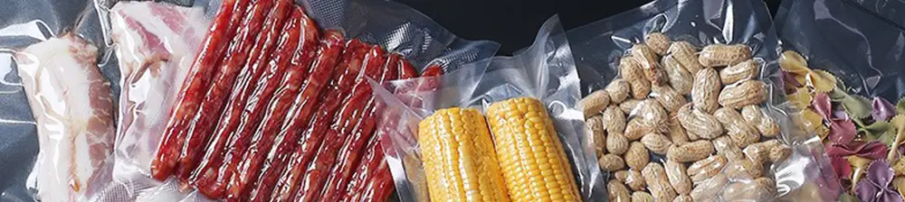

Rahasia Plastik Vakum: Menguak Peran Krusial dalam Pengawetan dan Pengiriman Makanan
Dipublikasikan pada 31 Juli 2025

Di era digital saat ini, berbelanja di marketplace online telah menjadi bagian tak terpisahkan dari kehidupan kita. Mulai dari barang elektronik, fashion, hingga makanan tradisional, semuanya kini bisa diakses hanya dengan sentuhan jari. Seiring dengan kemudahan ini, metode pengiriman barang yang efektif untuk mengurangi risiko kerusakan pun terus dikembangkan dan diterapkan pada berbagai produk.
Pernahkah Anda membeli makanan tradisional di marketplace online? Tim Mas Tukang pernah mencoba membeli jajanan Pudak yang khas dari Gresik, Jawa Timur. Dan tahukah Anda, saat paket Pudak itu tiba, jajanan tersebut dibungkus rapat dengan plastik vakum! Pernahkah Anda mengalami hal serupa?
Bagi yang belum familiar, Pudak adalah jajanan manis yang terbuat dari tepung beras, santan, dan gula. Keunikan Pudak terletak pada pembungkusnya, yaitu daun pinang, yang memberikan cita rasa dan aroma khas. Paduan rasa manis gula, lembut gurihnya santan, dan sentuhan aroma daun pinang menjadikannya jajanan yang tak terlupakan. Biasanya, Anda bisa menemukan jajanan ini dijajakan oleh pedagang kaki lima di bus-bus antarprovinsi. Siapa yang pernah mencicipinya?
Memahami Kemasan Plastik Vakum: Apa dan Bagaimana Cara Kerjanya?
Kembali ke topik utama kita: penggunaan kemasan vakum dalam pengiriman jajanan online. Untuk Anda yang mungkin belum akrab, kondisi vakum pada kemasan ini tercipta karena udara di dalam kemasan telah disedot keluar. Ketika jumlah udara berkurang drastis, atau bahkan hampir tidak ada, kemasan tersebut menjadi hampa udara—inilah yang kita sebut vakum.
Nah, proses "penyedotan" udara ini memiliki peran yang sangat penting dalam pengawetan makanan. Kondisi rendah oksigen di dalam kemasan vakum secara signifikan memperlambat proses pembusukan makanan.
Manfaat Pengawetan Makanan dengan Plastik Vakum
Mengapa pengurangan kadar oksigen ini sangat membantu dalam pengawetan makanan? Jawabannya sederhana: oksigen adalah elemen krusial yang dibutuhkan oleh banyak bakteri dan jamur untuk tumbuh dan berkembang biak pada makanan.
Dengan mengurangi kadar oksigen secara drastis, kemasan vakum secara efektif menghambat pertumbuhan bakteri dan jamur tersebut. Hasilnya? Makanan menjadi lebih awet dan memiliki risiko kerusakan yang jauh lebih rendah selama proses pengiriman. Dengan kata lain, makanan tradisional kesukaan Anda dapat bertahan lebih lama dan terjaga kesegarannya, bahkan ketika harus menempuh perjalanan jauh, berkat keajaiban kemasan plastik vakum ini.
Jadi, selain berfungsi untuk memudahkan proses pengiriman, penggunaan plastik vakum juga merupakan solusi vital untuk menjaga keawetan makanan. Video singkat tentang bagaimana plastik vakum digunakan dalam pengiriman jajanan Pudak dari Gresik, Jawa Timur, dapat Anda saksikan di bawah ini. Semoga informasi ini bermanfaat, dan jangan lupa untuk terus mendukung jajanan tradisional kita!